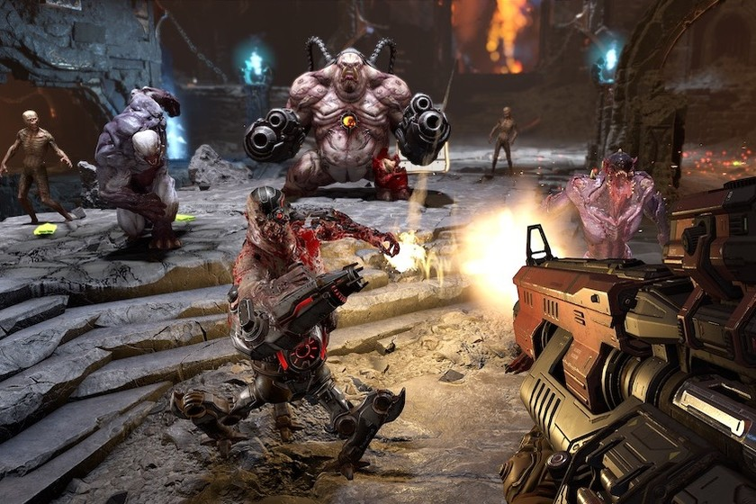
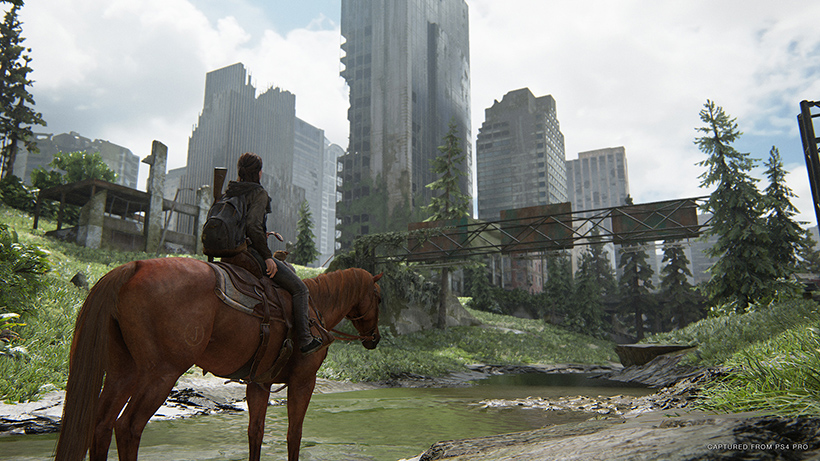
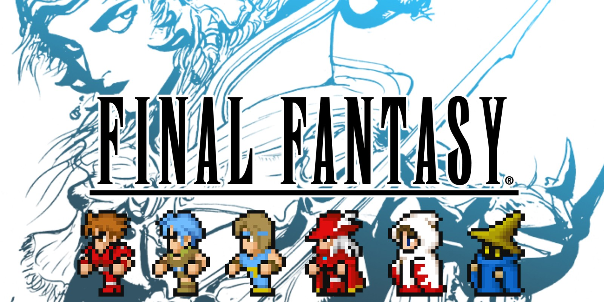
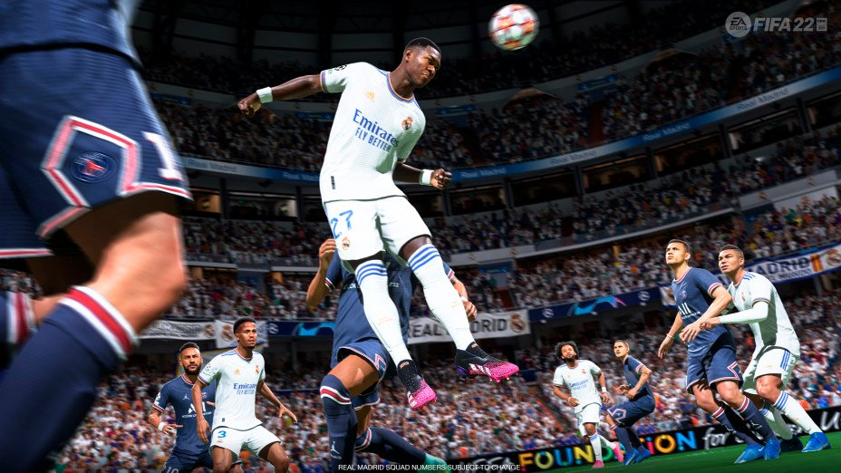
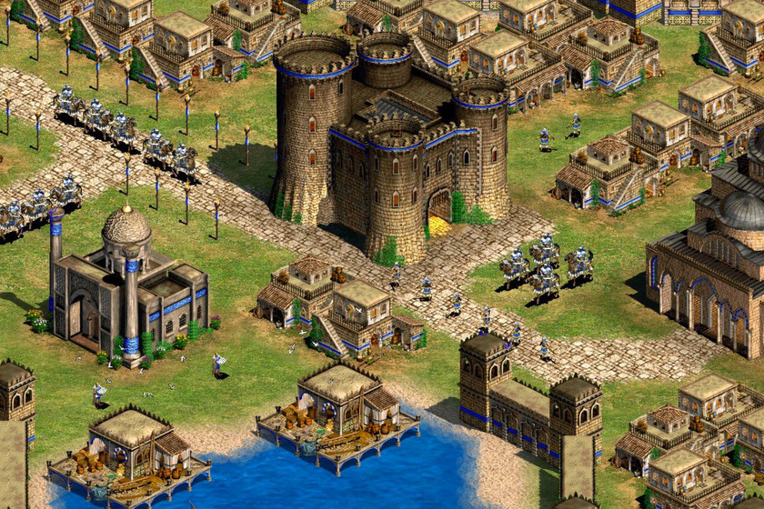

Clasificación por Géneros

Acción
Se enfocan en la rapidez, reflejos y combate. Ejemplo: Doom, Call of Duty.

Aventura
Exploración, narrativa e interacción con el entorno. Ejemplo: The Last of Us.

RPG
Rol y progresión de personajes con historias profundas. Ejemplo: Final Fantasy.

Deportes
Simulación de disciplinas deportivas. Ejemplo: FIFA, NBA 2K.

Estrategia
Requieren planificación táctica y toma de decisiones. Ejemplo: Age of Empires.

Simulación
Reproducen experiencias de la vida real. Ejemplo: The Sims, Flight Simulator.

Indie
Proyectos creativos desarrollados por estudios pequeños. Ejemplo: Hollow Knight.